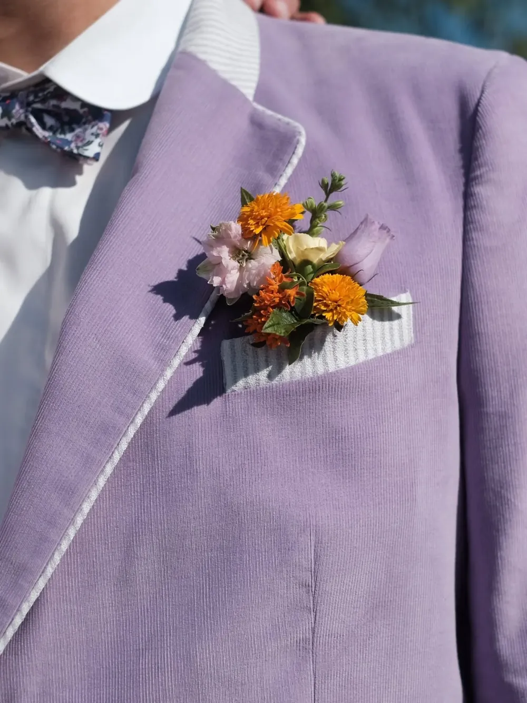
Bruidsboeket en corsages
Het boeket dat je de hele dag vasthoudt, en de corsages die erbij passen. Afgestemd op je jurk, het pak en jullie kleuren.
Op maat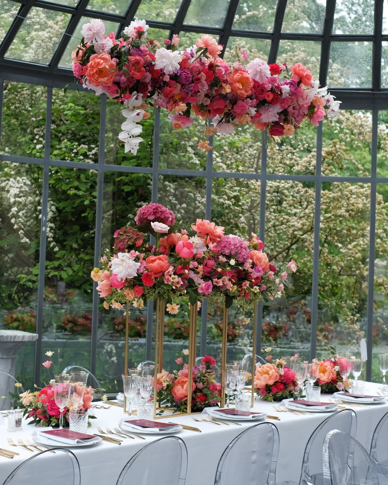
Ik ben Lise. Ik maak bruidsboeketten, tafels vol kleur en bloemenwolken die je gasten nog lang bijblijven. Altijd met verse bloemen, en altijd op maat van jullie twee.
Na een donkere periode koos ik voor bloemen. Stilletjesaan sijpelde er weer licht naar binnen.
Dat is wat bloemen voor mij doen: ze brengen licht, geluk en liefde. En dat wil ik ook voor jullie betekenen. Daarom werk ik zo persoonlijk mogelijk. Ik leer jullie eerst graag kennen, want geen enkel koppel en geen enkel huwelijk is hetzelfde.
Een paar inspiratiebeelden, jullie kleuren en jullie budget: meer heb ik niet nodig om te beginnen.
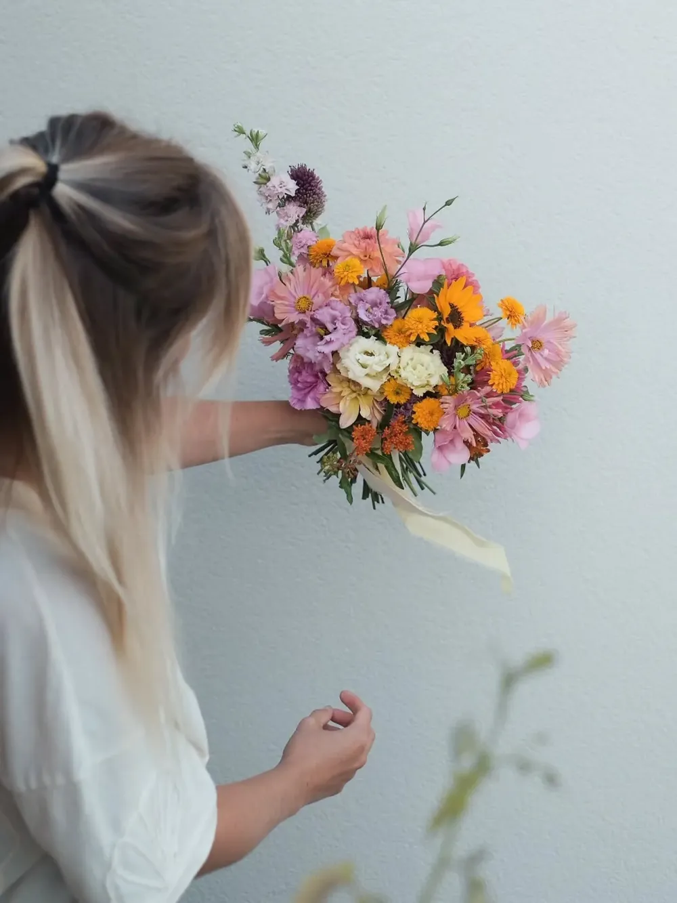
Van alle tinten roze tot een zacht blauw boeket. Ik stem de bloemen af op jullie stijl, en soms zelfs op de stoelen van de trouwlocatie.
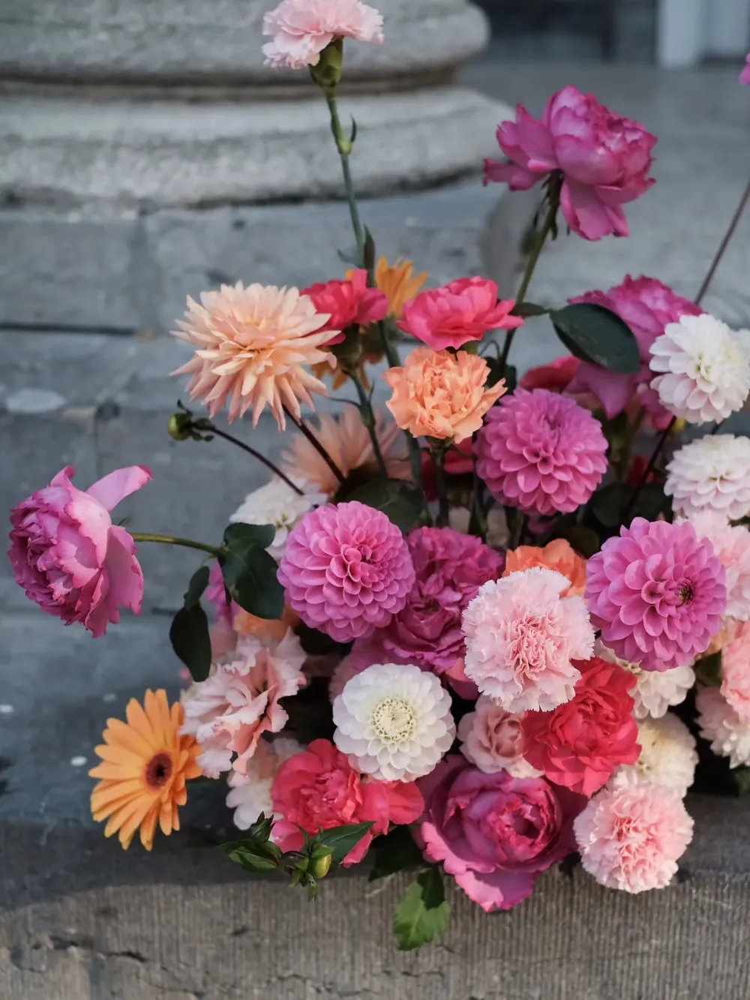
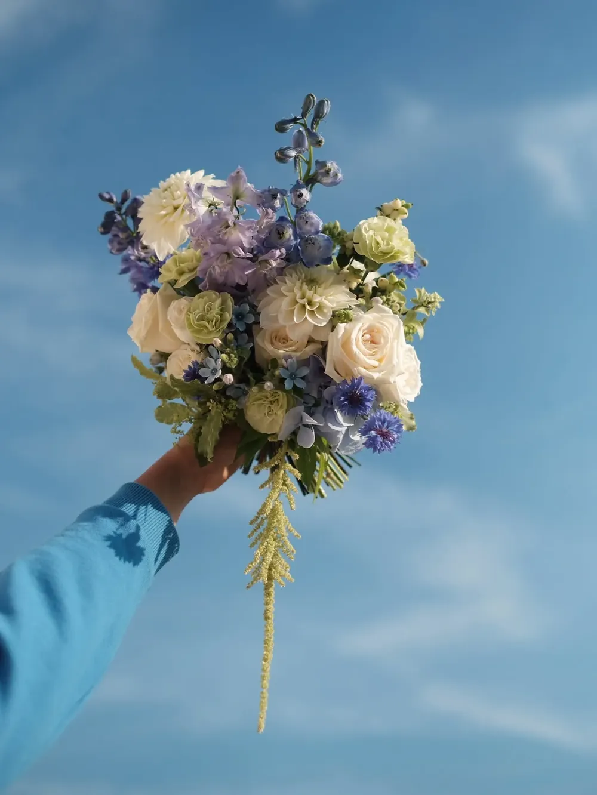
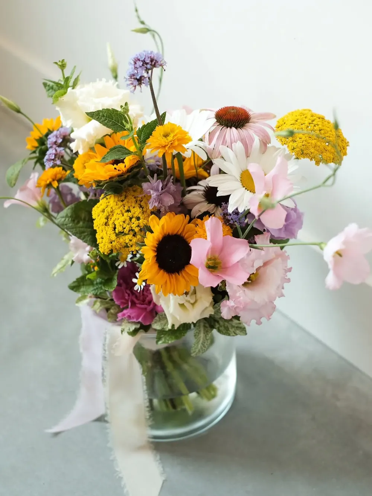
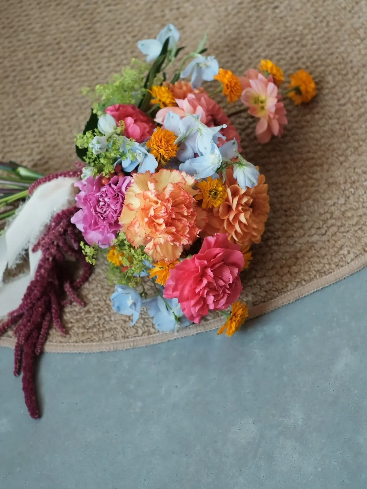
Op de dag zelf kom ik alles mee aankleden. Zo moeten jullie je om de bloemen geen zorgen meer maken.

Het boeket dat je de hele dag vasthoudt, en de corsages die erbij passen. Afgestemd op je jurk, het pak en jullie kleuren.
Op maat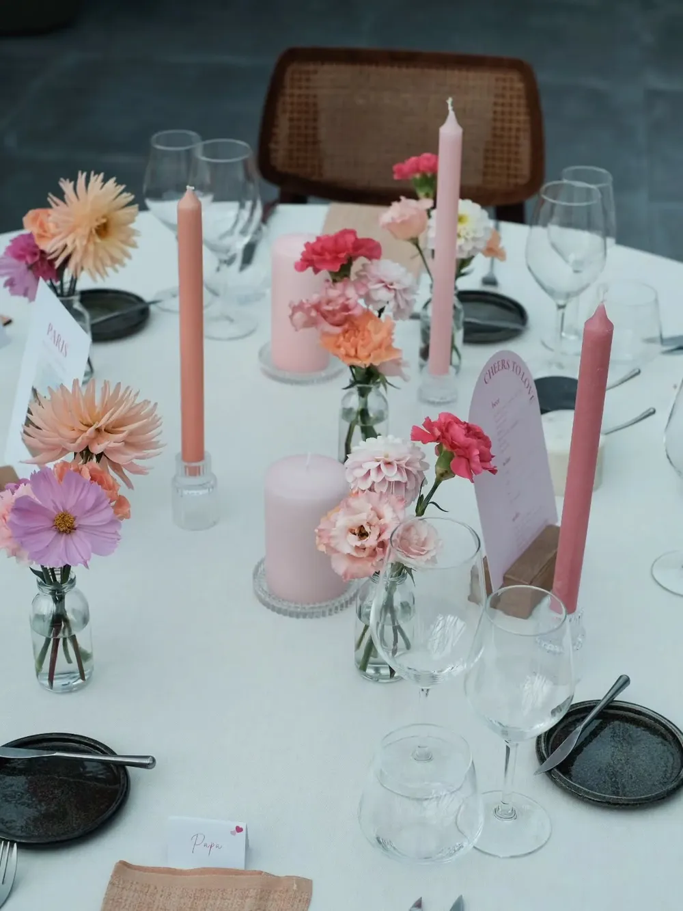
Tafelstukken, het welkomstbord, de ceremonie en een tent vol bloemen. Ik zorg dat het geheel klopt, van de inkom tot het dessert.
Aankleding ter plekke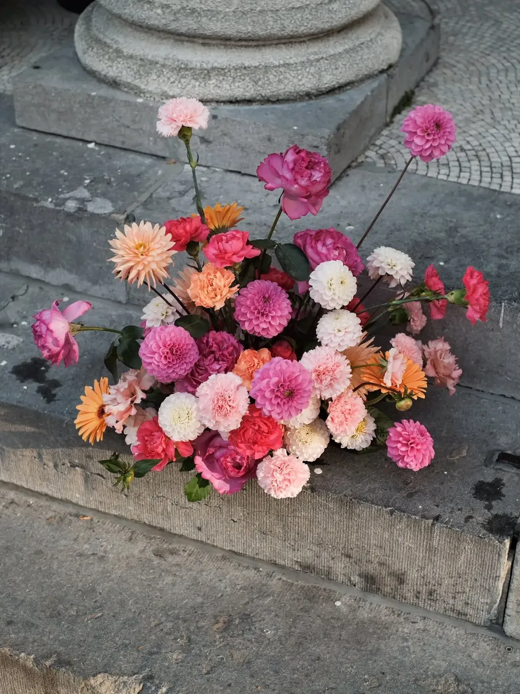
Ze vervangen steeds vaker de grote ceremonieboog. Het mooie: je verplaatst ze doorheen de dag, van de inkom naar de ceremonie en verder.
Steeds populairderLaat je trouwbloemen persen en inkaderen. Ze gaan van vers naar gedroogd en van driedimensionaal naar plat, en blijven zo jarenlang mooi. Dat kan na je huwelijk, een feest of een herdenkingsmoment.
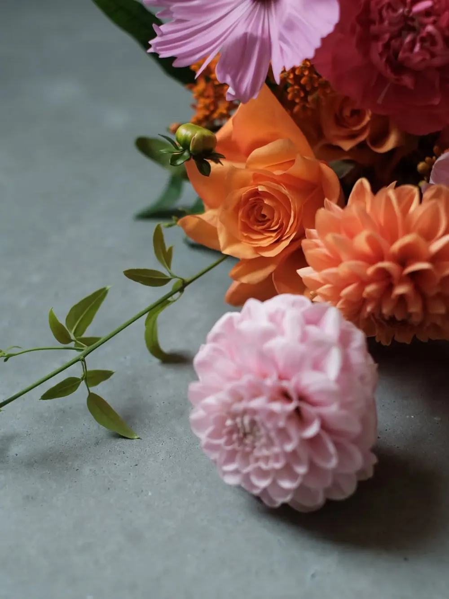
Drie van die reviews, letterlijk zoals ze op Google staan.
★★★★★Ookal was het voor ons niet eenvoudig om te verwoorden wat we voor ogen hadden, toch slaagde Lise erin om onze vage omschrijvingen om te zetten in prachtige “sunset” boeketten: boenk erop!
★★★★★Lise maakt letterlijk je wildest pinterest dreams come true op basis van slechts enkele inspiratiebeelden, steeds rekening houdend met je budget en persoonlijke voorkeuren. Zo een samenwerking waar je na een jaar nog steeds met een gelukzalige glimlach op terugkijkt.
★★★★★Lise verzorgde de bloemstukken in onze tent, de bloemen aan ons welkomstbord én mijn bruidsboeket. Alles was volledig zoals we het voor ogen hadden en perfect afgestemd op onze stijl en wensen.
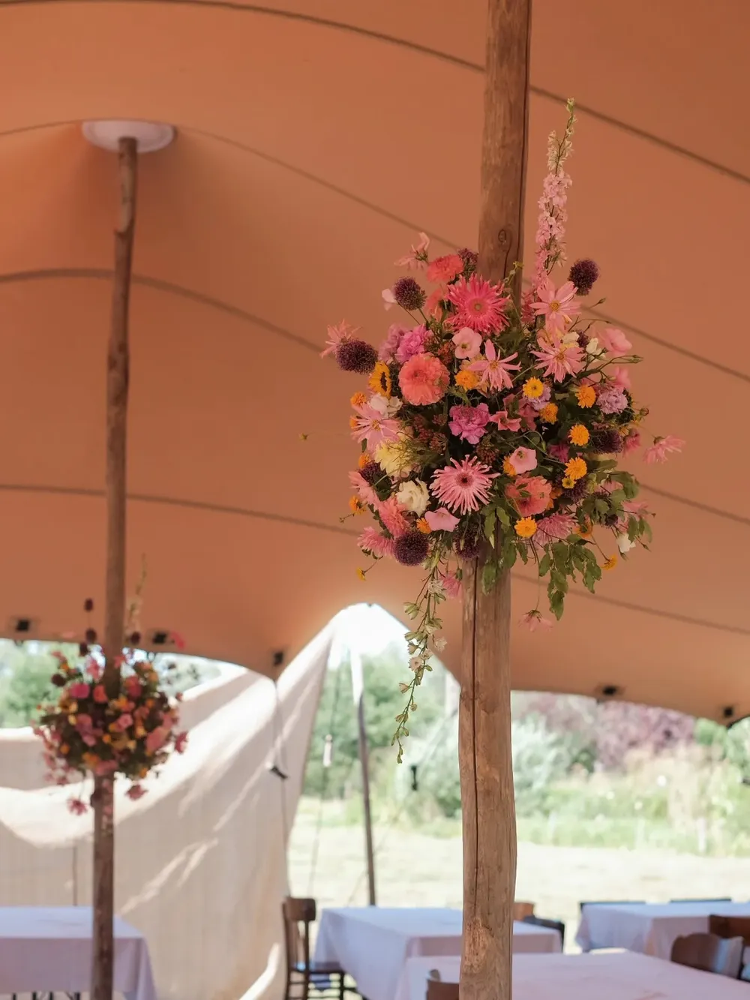
Stuur me een berichtje met jullie datum en locatie. Dan plannen we een gezellig kennismakingsgesprek waarin jullie al je wensen op tafel leggen.
Ik maakte deze demo voor jullie om te tonen wat er kan. Na een kort gesprek maak ik er iets veel persoonlijkers van, helemaal naar jullie wens.
Vrijblijvend. Ik kom langs of we bellen.
Op maat, op jullie eigen domein.
Geen voorschot. Jullie betalen pas als alles klaar is.
Hosting, domeinnaam en kleine wijzigingen, zoals nieuwe openingsuren.
Omdat een voorbeeld meer zegt dan een mail. Zo zien jullie meteen wat er kan, en het kost jullie niets.
Nee. Het gesprek is vrijblijvend. Vinden jullie het niks, dan is het daarmee gedaan.
Na ons gesprek staat jullie site binnen 10 tot 14 dagen online.
Zeker. Jullie domeinnaam kan gewoon blijven, de nieuwe site komt in de plaats van de oude.
Nee, dat doe ik op basis van ons gesprek. Eigen foto's zijn mooi meegenomen, maar niet nodig om te starten.